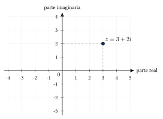

Capítulo 14
Números complejos
UNAM
Algunas ecuaciones, como
no tienen solución en el conjunto de los números reales. Para resolverlas se introduce la unidad imaginaria \(i\) y se amplía el sistema numérico al conjunto de los números complejos, denotado por \(\C\). En este capítulo estudiarás la forma algebraica de un número complejo, sus principales operaciones, su representación en el plano y el uso del conjugado para efectuar divisiones.
14.1 Unidad imaginaria#
La unidad imaginaria, denotada por \(i\), es el número que satisface:
De manera convencional, puede escribirse:
Gracias a esta definición, si \(a\) es un número real no negativo, entonces:
En los números reales no existe ningún número cuyo cuadrado sea \(-1\), pues el cuadrado de todo número real es mayor o igual que cero. La introducción de \(i\) permite resolver ecuaciones que no tienen soluciones reales.
Por ejemplo:
equivale a:
Por tanto, sus soluciones complejas son:
Las propiedades de los radicales utilizadas en los números reales no deben aplicarse sin cuidado a cantidades negativas.
Por ejemplo, el razonamiento:
es incorrecto, porque el lado izquierdo es:
La propiedad
se aplica directamente en los números reales cuando los radicandos son no negativos.
Expresa las siguientes raíces mediante la unidad imaginaria:
Ver solución
Escribimos cada radicando negativo como el producto de \(-1\) por una cantidad positiva:
14.2 Potencias de la unidad imaginaria#
Las potencias de \(i\) siguen un ciclo de periodo \(4\):
A partir de \(i^4\), los resultados se repiten:
Para calcular \(i^n\), se divide el exponente entre \(4\) y se utiliza el residuo:
- residuo \(0\): \[i^n=1;\]
- residuo \(1\): \[i^n=i;\]
- residuo \(2\): \[i^n=-1;\]
- residuo \(3\): \[i^n=-i.\]
Calcula:
Ver solución
Dividimos \(27\) entre \(4\):
El residuo es \(3\). Por tanto:
Calcula:
Ver solución
Como:
el residuo de dividir \(100\) entre \(4\) es \(0\). Por tanto:
14.3 Números imaginarios puros#
Un número de la forma
se denomina número imaginario puro. Para operar con varios números imaginarios puros, sus coeficientes se combinan como términos semejantes.
Si \(a\), \(b\) y \(c\) son números reales, entonces:
Simplifica:
Ver solución
Sumamos y restamos los coeficientes:
Simplifica:
Ver solución
Simplifica:
Ver solución
Expresamos las raíces negativas mediante \(i\):
Sustituimos y reducimos los términos semejantes:
14.4 Forma algebraica de un número complejo#
Un número complejo es una expresión de la forma:
donde \(a,b\in\R\) e \(i^2=-1\).
El número \(a\) se denomina parte real de \(z\) y el número \(b\) se denomina parte imaginaria de \(z\). Se escriben:
La parte imaginaria es el coeficiente \(b\), no el término completo \(bi\).
Un número complejo puede escribirse mediante:
- su forma algebraica: \[z=a+bi;\]
- su representación como par ordenado: \[z=(a,b).\]
Expresa los siguientes números complejos como pares ordenados:
Ver solución
- Para \(z=6-8i\): \[\operatorname{Re}(z)=6, \qquad \operatorname{Im}(z)=-8.\] Por tanto: \[z=(6,-8).\]
- Para \(z=4+5i\): \[z=(4,5).\]
- El número real \(-3\) puede escribirse como: \[-3=-3+0i.\] Por tanto: \[z=(-3,0).\]
- El número imaginario puro \(7i\) puede escribirse como: \[7i=0+7i.\] Por tanto: \[z=(0,7).\]
Todo número real es también un número complejo cuya parte imaginaria es cero:
Por esta razón:
Un número complejo es imaginario puro cuando su parte real es cero y su parte imaginaria es distinta de cero.
14.5 Representación en el plano complejo#
Un número complejo
puede representarse mediante el punto \((a,b)\) en el plano complejo. El eje horizontal representa la parte real y el eje vertical representa la parte imaginaria.
Representa el número complejo:
Ver solución
La parte real es \(3\) y la parte imaginaria es \(2\). Por tanto, el número corresponde al punto \((3,2)\).

El módulo de un número complejo
es su distancia al origen en el plano complejo. Se define mediante:
Calcula el módulo de:
Ver solución
La parte real es \(5\) y la parte imaginaria es \(-12\). Aplicamos la fórmula:
14.6 Igualdad de números complejos#
Dos números complejos son iguales si y solo si sus partes reales son iguales y sus partes imaginarias son iguales.
Es decir:
si y solo si:
Determina los valores de \(x\) y \(y\) si:
Ver solución
Igualamos las partes reales:
Igualamos las partes imaginarias:
Por tanto:
14.7 Suma y resta de números complejos#
Para sumar dos números complejos, se suman por separado sus partes reales y sus partes imaginarias:
Para restarlos:
Sean:
Calcula \(z+w\).
Ver solución
Sean:
Calcula \(z-w\).
Ver solución
14.8 Multiplicación de números complejos#
Para multiplicar dos números complejos, se aplica la propiedad distributiva y se utiliza la igualdad \(i^2=-1\):
Multiplica:
Ver solución
Aplicamos la propiedad distributiva:
Como \(i^2=-1\):
Multiplica:
Ver solución
14.9 Conjugado de un número complejo#
El conjugado del número complejo
se denota por \(\overline{z}\) y se define como:
El conjugado conserva la parte real y cambia el signo de la parte imaginaria.
Si \(z=a+bi\), entonces:
Escribe el conjugado de cada número complejo:
Ver solución
14.10 División de números complejos#
Para dividir dos números complejos, se multiplica el numerador y el denominador por el conjugado del denominador.
Si \(c+di\neq 0\), entonces:
Como:
se obtiene:
Calcula:
Ver solución
El conjugado del denominador es \(-4-3i\). Multiplicamos el numerador y el denominador por este número:
Calculamos el numerador:
Calculamos el denominador:
Por tanto:
La división entre números complejos solo está definida cuando el denominador es distinto de cero.
Si:
entonces:
Por ello, el producto del denominador por su conjugado es un número real positivo y permite eliminar la unidad imaginaria del denominador.
14.11 Ecuaciones cuadráticas con soluciones complejas#
Resuelve en \(\C\):
Ver solución
Identificamos:
Calculamos el discriminante:
Aplicamos la fórmula general:
Las soluciones son:
Cuando una ecuación cuadrática tiene coeficientes reales y discriminante negativo, sus soluciones complejas aparecen en pares conjugados:
14.12 Ejercicios propuestos#
Simplifica:
Ver solución
Calcula:
Ver solución
\(35 = 4(8) + 3\), entonces \(i^{35} = i^3 = -i\).
Simplifica:
Ver solución
Si
calcula \(z+w\).
Ver solución
Si
calcula \(z+w\).
Ver solución
Multiplica:
Ver solución
Calcula el módulo de:
Ver solución
Si
calcula:
Ver solución
Multiplicamos por el conjugado del denominador, \(2 + i\): \[\frac{(6 - i)(2 + i)}{(2 - i)(2 + i)}.\] Numerador: \(12 + 6i - 2i - i^2 = 12 + 4i + 1 = 13 + 4i\). Denominador: \(4 + 1 = 5\). \[\frac{13 + 4i}{5} = \frac{13}{5} + \frac{4}{5} i.\]
Simplifica:
Ver solución
Recordamos \(i^2 = -1\): \[(-6 + i) + (-1 - 2i) = -7 - i.\]
Simplifica el cociente:
Ver solución
Multiplicamos por el conjugado del denominador, \(1 - i\): \[\frac{(1 - i)(1 - i)}{(1 + i)(1 - i)} = \frac{(1 - i)^2}{1^2 + 1^2}.\] Numerador: \(1 - 2i + i^2 = 1 - 2i - 1 = -2i\). Denominador: \(2\). \[\frac{-2i}{2} = -i.\]